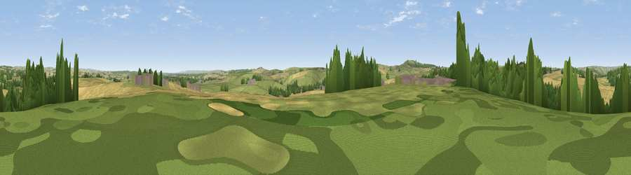

Viewpoint near Martinstown
#30872 in England · top 69% of its area beats it · near MartinstownThe view, rendered

A 360° render of this exact spot computed from the terrain model, tree cover and land cover — summer colours, afternoon light, calibrated against photographs of famous viewpoints. Real trees, hedges and buildings will differ in detail.
The panorama
Grey silhouette: terrain skyline in each direction (720 bearings, Earth curvature and refraction included). Dashed green: skyline with trees (+15 m) and buildings (+8 m) as obstacles. Blue strip: how far the ground is visible on each bearing.
Where the view opens
Wedge length = distance to the farthest visible ground on that bearing (vegetation-aware). Rings at 10, 25 and 50 km.
What fills the view
43% cropland · 41% grassland · 13% woodland · 3% built-up
Angular shares of the visible panorama (visual magnitude), not map area. Landscape diversity 0.47 (0–1 Shannon).
Key numbers
More beautiful places nearby
The staircase of upgrades: each row has a higher view potential than everything closer. Driving times are estimates from straight-line distance, calibrated against real road routing — check an actual route before setting out.
| Place | Direction | Drive | Score |
|---|---|---|---|
| Viewpoint near Winterbourne Steepleton | WNW · 2 km | ~5 min | 51.4 |
| Viewpoint near Upwey | SSE · 4 km | ~9 min | 77.6 |
| Viewpoint near Portesham | SW · 5 km | ~10 min | 82.7 |
| Viewpoint near Abbotsbury | WSW · 10 km | ~19 min | 89.0 |
| Viewpoint near West Bexington | WSW · 11 km | ~21 min | 89.5 |
| The Knoll | WSW · 12 km | ~22 min | 91.0 |
50.71194, -2.49743 · source: screening · position refined by local search. Computed location — check access rights before visiting.